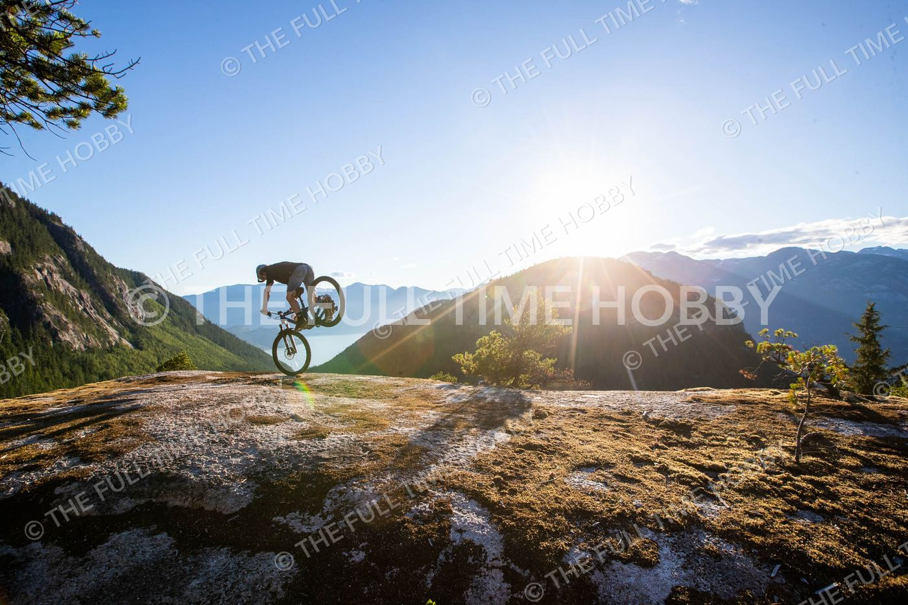
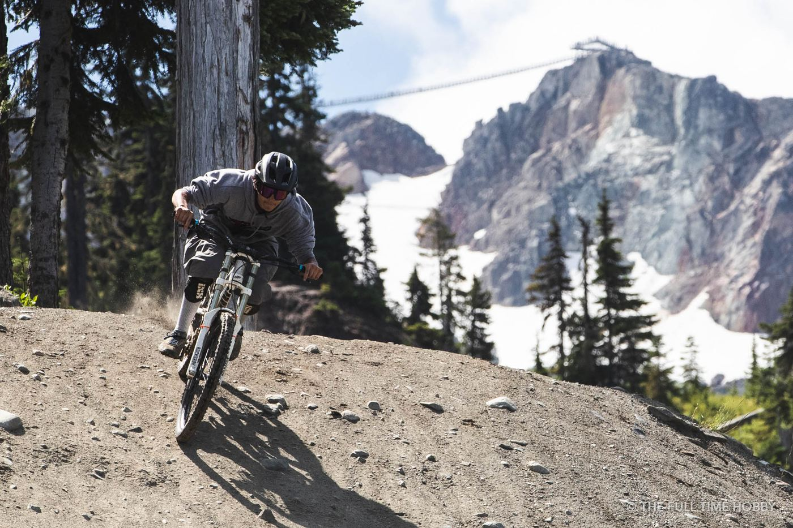
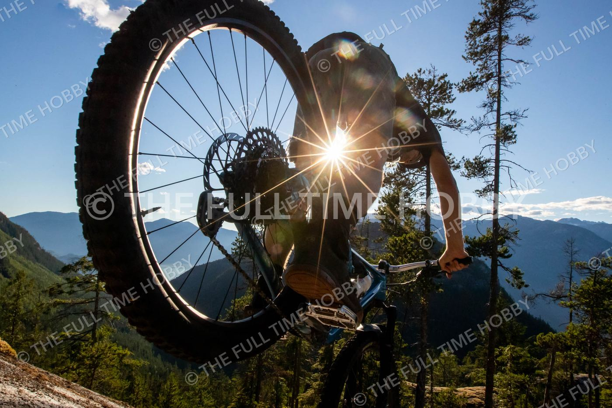
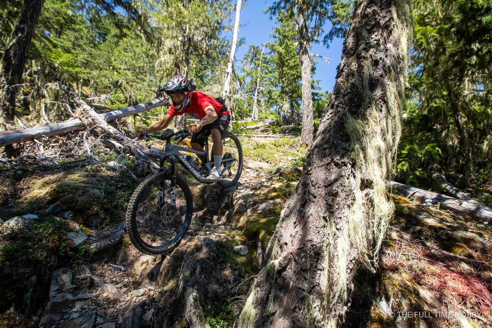
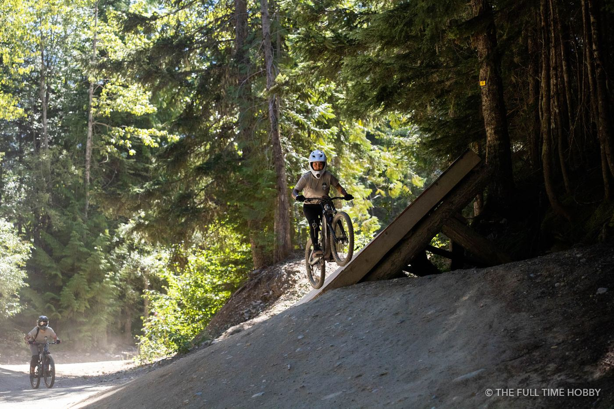

Start with the trail, not the camera
The best mountain bike photos come from understanding the trail. Ride or walk it first. Look for features that tell the story: a jump, a rock roll, a berm, a giant tree. Then think about where the light will be at the time of day you plan to shoot. In the forest, the narrow window when the sun cuts through the canopy is gold.
Where to stand
- Low and close for drama: a wide angle and a low position makes jumps and rock rolls look bigger.
- Back and wide for landscape: put the rider in a mountain, forest or valley scene and let the scenery do the work.
- Out of the line: never stand where a rider could hit you if they fall or slide. Agree on a safe spot with the rider.

Settings that work
- Shutter: 1/1000 s or faster to freeze the rider. Go 1/2000 s for jumps and air time.
- Panning: try 1/60 s to 1/125 s on flatter sections for a sharp rider and a blurred background.
- Focus: continuous autofocus with subject tracking, and burst mode on.
- Aperture: f/4 to f/8 keeps the rider and some of the scene sharp. Go wider for portraits and detail shots.
- Sunbursts: stop down to f/16 and place the sun just behind a tree or the rider to get a star effect.

Light in the forest
West coast forests are dark and contrasty. Watch for shafts of light, and expose for the highlights so the rider doesn’t blow out. If you have a flash or two, a bit of fill can bring detail into a rider in the shade. Shoot RAW so you can recover the shadows.

Working with riders
- Brief them: where to ride, where to stop, what you need.
- Ask for a few laps. The second and third runs are usually better.
- Don’t push anyone past their comfort level. A good photo is never worth a crash.
- Capture details: gloves, tire treads, dust, hands on bars. They round out the story.

Trail etiquette
Don’t block the trail. Keep gear off the track, yield to riders, and don’t build or alter features without permission. Many Sea to Sky trails are on Indigenous territory and shared with hikers, so stay on the designated lines.
Need gear or a pro?
If you want to try these setups, you can rent a pro camera, long lens and flash in Squamish. Or hire me for a brand or event shoot. See more in Squamish adventure photography.